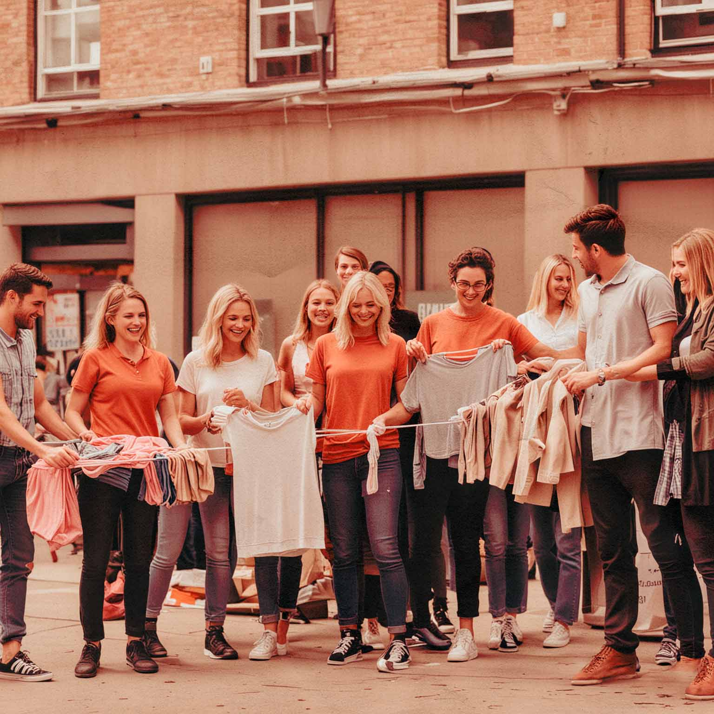

Track dit tøj: Forestil dig at følge dit tøj fra det øjeblik, du lægger det i tøjcontaineren, til det når frem til de udsatte områder. Med vores sporingssystem kan du se den direkte indvirkning af din donation og hvordan den når ud til dem, der har mest brug for det. Bliv en del af rejsen med os, og se din indsats gøre en forskel!

Begivenheder: Vores begivenheder på skoler og universiteter er fyldt med engagement, hvor vi organiserer tøjdonationskampagner. Vi inspirerer studerende til at bidrage til genbrug og velgørenhed ved at donere tøj og skabe en positiv indvirkning på vores samfund. Vær med til at gøre en forskel med os!
Om os: Vi er et passioneret team fra University College Lillebælt (UCL) og Røde Kors, der brænder for at skabe positiv forandring gennem genbrug og velgørenhed. Motiverer og engagerer vi unge mellem 20-25 år til aktiv deltagelse i genbrugsinitiativer og øger social bevidsthed om bæredygtighed. Hvordan kan vi sammen skabe en mere bæredygtig fremtid?"

Din stil, deres smil
Velkommen til 'Din stil, deres smil'! Vi gør det enkelt for unge at donere overskydende tøj. Med genbrugscontainere ved universiteter og skoler opfordrer vi til bæredygtig mode og socialt ansvar. Du kan tracke din donation og se den positive indvirkning, du skaber i lokalsamfundet. Gør en forskel med din tøjdonation i dag!
Læs mere om genbrug
Hør vores støtte sang
Har du hørt støttesangen "We Are the World" og det inspirerende initiativ "Rock for Afrika"? Disse ikoniske musikalske bestræbelser har i årevis forenet verden i kampen mod ulighed og fattigdom. Nu, anno 2024, følger vores bud på en støttesang i deres fodspor. Med et hjerte fyldt med håb og en stemme fuld af styrke, synger vi sammen om en bedre fremtid, hvor solidaritet og medmenneskelighed er vores ledestjerner. Lad os sammen løfte hinanden og skabe forandring, én tone ad gangen.